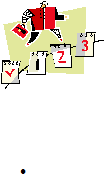

|

Page 95
toward its consistent implementation. After all, you can come up with a civility
policy that looks good on paper, but if your core group is not even motivated to
spread the word around, then all your hard work remains words on a manual. You
need to strategically plan how you can go about making sure that civility policies
translate to a culture of civil behavior.
So what to do first? Consider the following:
Launch an
awareness campaign. The first step in any campaign is to increase the awareness of
persons concerned regarding the existence of a program. After all, you can’t develop a positive
attitude towards what you do not, much less put it into action. You have to spread the word
around. There are many possible ways you can raise awareness about civility within your
company:
o
You can schedule a presentation of the new company policy --- set a date for the
“launch” of the policy and make sure everyone is in attendance.
o
You can put up posters, distribute flyers, and create a website or an e-learning course.
o
You can spread the information via word-of-mouth; for instance, task your core group to
make sure that at least one new person every day from their social circle gets to know
about the policy, or you can designate a spokesperson/champion for civility.
o
It would also be helpful if, as soon as possible, civility policy gets included in the training
and continuous education program of new and old employees alike.
|